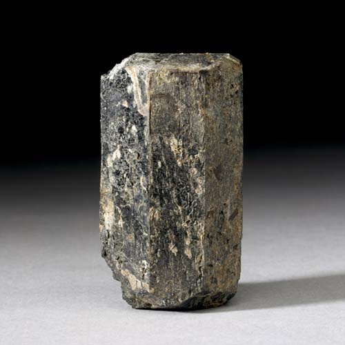
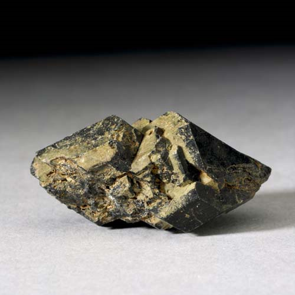
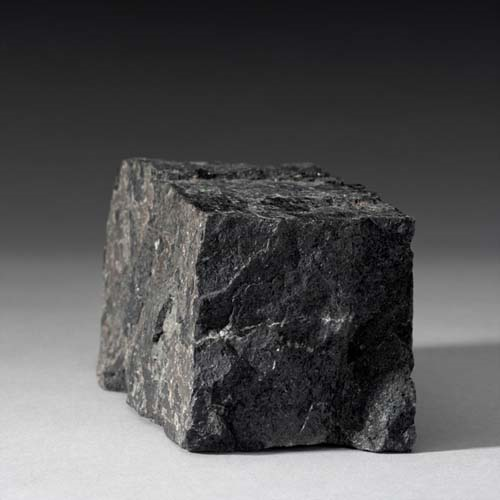

Augite - (Ca,Mg,Fe)2(Si,Al)2O6
Single-Chain Inosilicates




Habit: Black, brown, greenish or violet brown. Stubby prismatic crystals, square or octagonal in section; also acicular, skeletal or dendritic. Vitreous or resinous to dull luster; transparent to opaque. Greenish gray streak.
Environment: Essential in mafic igneous rocks, basalt and gabbro; common in ultramafic rocks and occurs in some high-grade metamorphic rocks and metamorphosed iron formations.
Etymology: From the Greek auge, meaning "shine" or "luster," apparently because of the appearance of its cleavage surfaces.